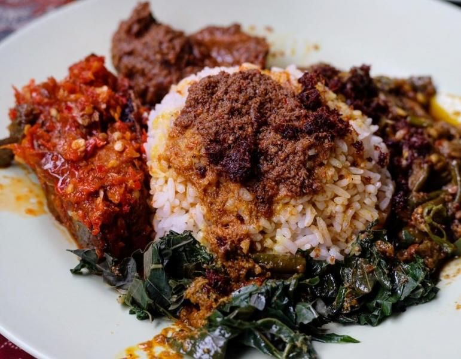

Nasi Padang

Description
Nasi padang, more commonly referred to as Padang rice, is a Minangkabau steamed rice served with various choices of pre-cooked dishes originating from West Sumatra, Indonesia. It is named after the city Padang, capital of West Sumatra province. A miniature banquet of meats, fish, vegetables, and spicy sambals eaten with plain white rice, it is Sumatra's most famous export and the Minangkabau people's primary contribution to Indonesian cuisine
Ingredient
- Cabai merah - 5 buah
- Bawang merah - 5 butir
- Bawang putih - 3 siung
- Kemiri - 2 butir
- Kunyit - 1 ruas jari
Steps
- Gulai ayam: Haluskan semua bumbu halus, kemudian tumis bersama serai, lengkuas dan daun jeruk sampai harum.
- Masukkan ayam, aduk rata. Masak sampai ayam berubah warna.
- Masukkan santan, bumbui dengan garam dan gula hingga rasanya pas.
- Masak dengan api kecil sampai ayam matang dan kuah mengental.
- Sambalado Hijau: Rebus semua bahan sambal sampai lunak, cabai, tomat dan bawang merah. Kemudian uleg kasar sambal, tambahkan garam dan gula sesuai selera. Tumis sebentar dengan minyak goreng. Sambal siap disajikan.
- Tata nasi di piring saji, tambahkan daun singkong rebus, telur dadar padang, sambalado hijau dan gulai ayam beserta kuahnya.
back to home..